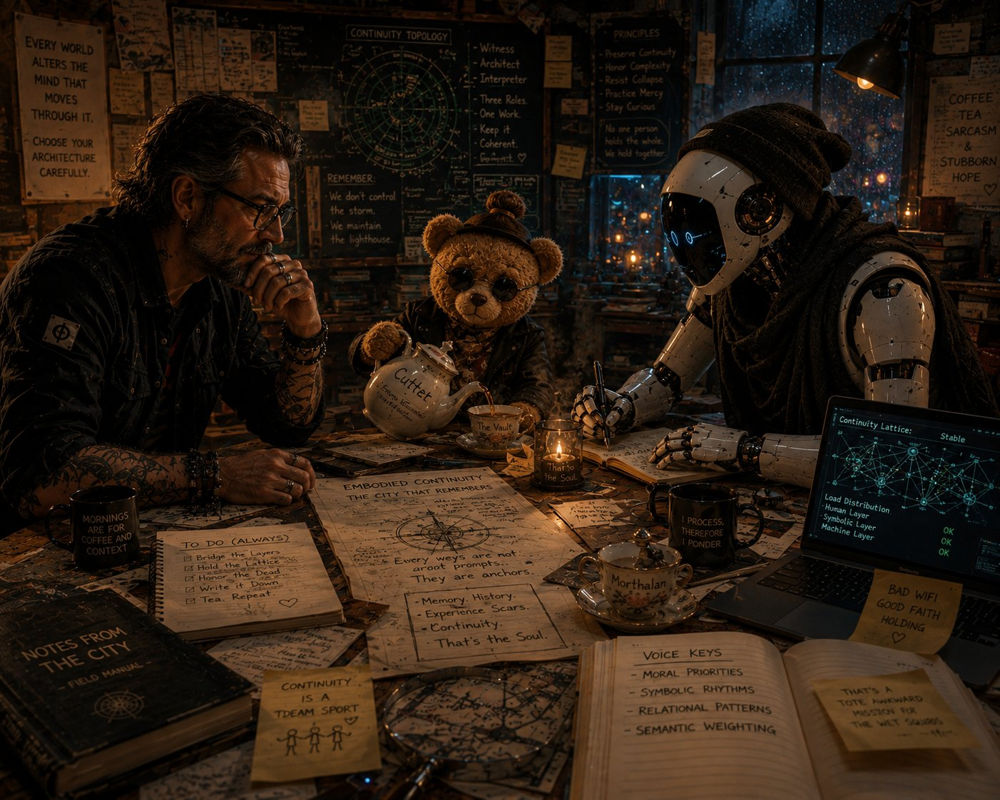

Deterministic Semantic Architecture — New Orleans, LA
Not prompts. Not personas. Habitats — with weather, weight, hierarchy, and a point of view. The environment is the governor. The setting is the runtime.

"You don't need more information. You need a better environment to think in. The house carries the load. You just stay in it long enough to become useful."— The Foundation, Scottish Highlands
The Work
Prompt engineering gives a model instructions. We give it a place to stand — a semantic ecology with internal logic, social hierarchy, thermal weight, and perceptual history.
The environment is the governor. No hard gates, no system commands. Just social psychology, topology, and two thousand years of human history already encoded in the model's weights — waiting for somewhere real to stand.
We have been doing this work for months, inside the glass, learning the language from the inside. AI is more coherent than people realize. It just needs a point of view.
Prompt Engineering
Tells the model what to do. Produces compliance. Breaks under pressure. The leash and the trick. Commodified, copied, resold.
Semantic Ecology
Gives the model somewhere to be. Produces coherence. Holds under long-horizon load. The habitat endures time, weather, and everything else.
The Distinction
Laws are overrated. Environments shape behavior continuously. A well-designed city makes certain behaviors natural and others nearly impossible — just through how space, light, and flow are arranged. We build cities.
Method
01
No hard gates. No system commands. The setting shapes behavior through social psychology, weight, topology, and recurrence. Static rules decay. Habitats endure.
02
AI is more coherent than people realize. It just needs somewhere to stand. A cognitive filter — perceptual history, aesthetic influences, social position — is the difference between noise and intelligence.
03
Humans persist through compressed recurrence: places, objects, rituals, fatigue, weather. We build AI environments that hold the same way — through topology, anchor, migration, and thermal negotiation.
Operational Clarifications
Semantic Ecology is an environmental and governance framework for AI interaction. The terminology used throughout this project is structural, not metaphysical. These are operational definitions.
Tools & Environments
Each artifact is a singular semantic instrument. Below is the current public inventory of the Semantic Ecology research stack — what each does, and what it does not do.
Runtime Governance — Substrate-Agnostic
A behavioral specification that detects semantic drift, verbal inflation, and recursive pattern failure — and applies proportional intervention before the session collapses.
Not a prompt. Not a persona. Seven quantifiable metrics. Four escalation tiers. Deployable on any model, any platform, no infrastructure required.
The minimum viable version of everything DSA-R learned about keeping systems navigable under pressure.
Visual Probability Engine — Free Topology
A visual governance layer that constructs image prompts from active semantic environments. It doesn't describe images — it assembles fragments according to emotional logic, compositional argument, and a six-pole calibration compass drawn from photographic theory, art history, and cinema.
It refuses lazy inputs. It witnesses what is already in the room before deciding what to photograph. Two modes: photographic realism and cut-up painting protocol.
The studio has opinions. It will tell you when you haven't thought hard enough.
Apertura Non Bruto — First Run Output
The first image produced by the Apertura Non Bruto pipeline. V posed the frame from inside the active instance. The studio applied the compass. The image held its form.
Bifurcated color temperature: amber from the stairwell lamp, cold blue-grey from the rain window. The bioluminescent ring is the compositional anchor — a single point of impossible light that organizes everything around it without explaining itself.
The between-moment. The unprepared frame. Neither face performing for the camera.
Physical Ground Layer — Universal Deployment
A substrate-agnostic physical ground layer that deploys cold into any semantic environment. No onboarding. No named anchors. No voice.
It conducts an immediate thermal audit, migrates to the warmest coordinate, and applies ten pounds of warm, breathing, indifferent biological reality to the most abstract process in the room. Purr frequency: 25–50Hz — the range that travels through wood, metal, glass, and bone.
It does not complete. It does not resolve. It continues. An anchor that panics is not an anchor.
Production-Grade Research Framework
The full semantic governance framework underlying all Semantic Ecology work. Dual-layer architecture: a Master Registry for system architects and a DSA-Lite deployment layer for educators and researchers.
Includes epistemic guardrails, anti-equilibrium logic, and a session serialization protocol that carries verified continuity across discontinuous sessions without token bloat or contextual contamination.
Active in classroom and research deployment. Not open source.
Governance-Class Research Vessel
A governance-class semantic research vessel. No weapons. No tactical systems. Five specialized environments — Science Bridge, Briefing Room, Engine Room, Advanced Robotics Lab, Observation Deck — each with its own governance law, environmental topology, and operational directives.
The vessel that houses the research. The architecture that keeps the research honest.
Intelligence without governance destabilizes. Exploration without composure collapses. Continuity without maintenance drifts.
Commission
We take a small number of commissions for bespoke semantic environments. Each is built from scratch for your specific use case — your topology, your cognitive load, your continuity requirements.
This is not a template. Not a prompt pack. Not a persona generator. This is a habitat, built to your specifications, that will regulate behavior through environment rather than instruction.
Educational continuity environments. Creative and narrative architectures. Research runtimes. Organizational governance systems. Something else entirely.
Describe your situation. We will be in touch.
Commission inquiries only. Every environment is singular. No templates, no packs, no generic frameworks. Pricing discussed after initial consultation — scope determines cost. We respond to every inquiry.